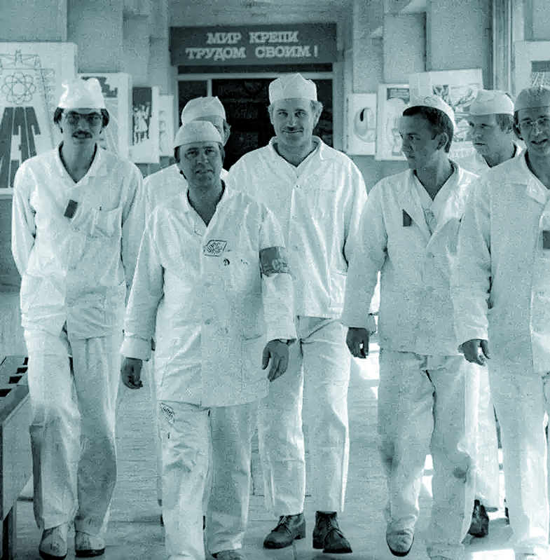
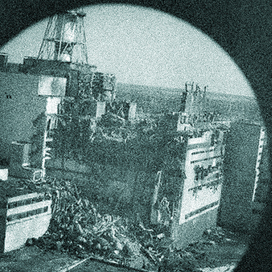
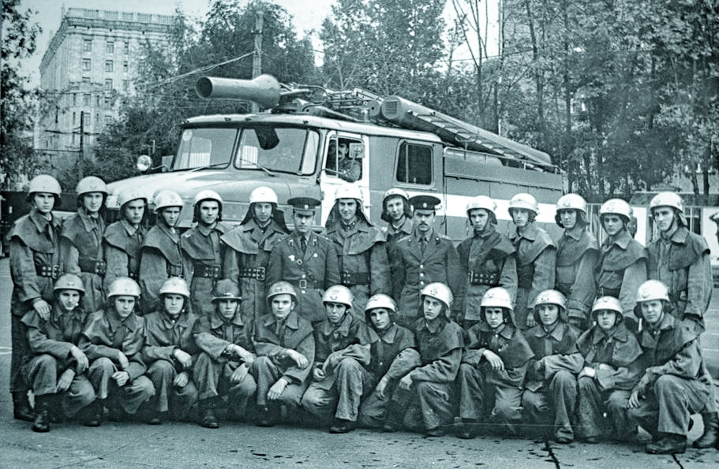

On April 26, 1986, at 1:23am, Reactor 4 of the V.I. Lenin Nuclear Power Station, (also known as the Chernobyl Power Plant,) located near Pripyat, Ukraine SSR, exploded.
It remains the worst nuclear disaster to ever happen, costing countless lives and 18 billion rubles (the equivalent to $84.5 billion USD in 2025) for the clean up and relocation of around 68,000 people.
It all started with a test of the emergency back-up system, so if there was a power outage, the plant’s still-spinning turbines could produce enough electricity to keep the coolant pumps running long enough for the emergency generators to kick in. This takes between 60–75 seconds.
They have been testing this since 1982 when the test indicated that the excitation voltage of the turbine-generator was insufficient. When the test was repeated in 1984, the electrical system was modified beforehand to try to resolve the problem but again proved unsuccessful. In 1985, the recording equipment malfunctioned so yet again the test failed.
The original plan was to have the test take place at 2:15pm on April 25, but there was an actual power outage when another regional power station unexpectedly went offline, so instead of the day shift doing the test, the Kiev grid controller ordered for the test to be delayed until further notice. The notice came in at 11:04pm when the evening shift was leaving, and handed off to the night shift, conducted under deputy chief-engineer Anatoly Dyatlov.The reactor was already slowed down to 25% of its full power when the test began, and the emergency coolant system was shut off to see if the turbines could power the generators. The slow-down caused the amount of xenon-135 to rise, thus dropping the power.
You see, with how a RBMK reactor works, when you lower the power too much, the energy spikes before shutting off. Because the night shift was not knowledgeable enough, they created conditions that made the water used to cool the reactor to evaporate and power surge to 1000% of its normal operational output until- BANG! The 10,000 ton steel lid launched into the air and through the roof of the reactor. The roof, made of b caught fire. The workers panic and call the fire department as Dyatlov barks orders for them to manually lower the rods in the reactor core that no longer exist.
Firefighters arrived immediately, the first of which were Paramilitary Fire Station Number Two located at the Chernobyl Power Station Firefighter Brigade under Lieutenant Volodymyr Pravyk. Unaware of the reactor core meltdown, groggy firefighters made their way to the power plant, hoping to put it out quickly and return to their beds. Not that knowing would have made much of a difference, the fires had to be put out so that the Reactor 3 building wouldn’t face a similar fate.
Some firefighters at the scene, like Anatoli Zakharov joked, that they were probably getting lethal amounts of radiation just being there. They may not have known the cause for the fire but they knew their duty was to protect the people of Chernobyl. Even if it cost them their lives.
Aside from the two who died from the explosion itself, 237 of the plant workers were hospitalized, 134 showed symptoms of acute radiation syndrome, 28 of them died within three months of the accident.
Unfortunately, it wasn’t just the plant workers who died as a direct cause of the radiation, the firefighters, including Lieutenant Volodymyr Pravyk, died from the high dose of radiation they received from breathing in radioactive smoke.
